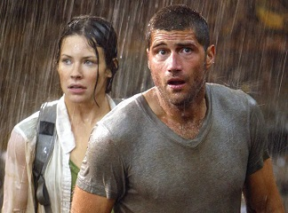

1. Breaking Bad

Mild-mannered high school chemistry teacher Walter White thinks his life can't get much worse. His salary
barely makes ends meet, a situation not likely to improve once his pregnant wife gives birth, and their
teenage son is battling cerebral palsy. But Walter is dumbstruck when he learns he has terminal cancer.
Realizing that his illness probably will ruin his family financially, Walter makes a desperate bid to
earn as much money as he can in the time he has left by turning an old RV into a meth lab on wheels.
2. The Office

The Office is an American mockumentary sitcom television series that depicts the everyday
work lives of office employees in the Scranton, Pennsylvania branch of the fictional Dunder Mifflin
Paper Company. It aired on NBC from March 24, 2005, to May 16, 2013, spanning a total of nine
seasons. Based on the 2001–2003 BBC series of the same name created by Ricky Gervais and Stephen
Merchant, it was adapted for American television by Greg Daniels, a veteran writer for Saturday Night
Live, King of the Hill, and The Simpsons.
3. LOST

Lost is an American drama television series that aired on ABC from September 22, 2004, to May 23, 2010,
over six seasons, comprising a total of 121 episodes. The show contains elements of supernatural and
science fiction, and follows the survivors of a commercial jet airliner flying between Sydney and Los
Angeles, after the plane crashes on a mysterious island somewhere in the South Pacific Ocean. The story
is told in a heavily serialized manner. Episodes typically feature a primary storyline set on the
island, augmented by flashback or flashforward sequences which provide additional insight into the
involved characters.